REST-API¶
Ehe wir uns weiter mit dem Frontend beschäftigen, erstellen wir einen Server, der uns die Daten liefert, das sogenannte Backend. Derzeit haben wir unsere Mockup-Daten noch clientseitig von einem Service verwalten lassen. Das wollen wir nun ändern. Die Daten speichern wir in einer Datenbank und stellen sie über eine REST-API bereit. Als Datenbank verwenden wir PostgreSQL.
REST¶
Für diese Datenbank stellen wir die Implementierung einer Schnittstelle bereit, so dass wir die wesentlichen Datenbankanfragen darüber ausführen können. Diese wesentlichen Datenbankfragen werden mit CRUD abgekürzt, für Create, Read, Update und Delete. Das bedeutet, wir implementieren Funktionalitäten, mit denen wir einen neuen Datensatz in die Datenbank einfügen (create), aus der Datenbank auslesen (read), in der Datenbank aktualisieren (update) und aus der Datenbank löschen (delete) können.
Die Schnittstelle, die wir implementieren, ist eine sogenannte REST-API. REST steht für Representational State Transfer und basiert auf einigen wenigen Prinzipien:
- Alles wird als eine Ressource betrachtet, z.B.
book. - Jede Ressource ist durch URIs (Uniform Resource Identifiers) eindeutig identifizierbar, z.B.
http://localhost/books. - Es werden die Standard-HTTP-Methoden verwendet, also
GET,POST,PUT,UPDATE. - Ressourcen können in verschiedenen Formaten vorliegen, z.B. in HTML, XML, JSON,
- Die Kommunikation ist zustandslos. Jede einzelne HTTP-Anfrage wird komplett isoliert bearbeitet. Es gibt keinerlei Anfragehistorie.
Das bedeutet, wir erstellen ein Backend (einen REST-Server), an den HTTP-Anfragen mit der eindeutig identifizierbaren Ressource gestellt werden. Das Backend erstellt daraus die entsprechende SQL-Query. Das Resultat der Datenbankanfrage wird im JSON- Format bereitsgestellt (kann aber auch HTML, XML oder ein anderes Format sein) bereitsgestellt.

Prinzipiell gibt es also ein Mapping von HTTP-Anfragen auf SQL-Anfragen:
| CRUD | SQL | MongoDB | HTTP |
|---|---|---|---|
| create | INSERT | insertOne(), insertMany() | POST |
| read | SELECT | findOne(), find() | GET |
| update | UPDATE | updateOne(), updateMany() | PUT (oder PATCH) |
| delete | DELETE | deleteOne(), deleteMany() | DELETE |
Zur Unterscheidung zwischen PUT und PATCH siehe z.B. hier oder hier.
Wir wollen uns ein Backend erstellen, über das wir unsere Daten verwalten. Dazu überlegen wir uns zunächst ein paar sogenannte Endpunkte (siehe Prinzipien von REST oben) und die Zugriffsmethoden, mit denen wir auf unsere Daten zugreifen wollen.
| Methode | URL | Bedeutung |
|---|---|---|
| GET | /members | hole alle Datensätze |
| GET | /members/11 | hole den Datensatz mit der id=11 |
| POST | /members | füge einen neuen Datensatz hinzu |
| PUT | /members/11 | ändere den Datensatz mit der id=11 |
| DELETE | /members/11 | lösche den Datensatz mit der id=11 |
| DELETE | /members | lösche alle Datensätze |
Der Wert der id ist natürlich nur ein Beispiel. Es soll für alle id-Werte funktionieren, die in unserem Datensatz enthalten sind.
Ein Node.js-Projekt mit Express¶
Wir starten damit, uns ein node.js-Projekt zu erstellen. Dazu erstellen wir uns zunächst einen Ordner backend, wechseln in diesen Ordner und führen dann npm init aus:
Sie werden ein paar Sachen gefragt. Im Prinzip können Sie immer Enter drücken:
This utility will walk you through creating a package.json file.
It only covers the most common items, and tries to guess sensible defaults.
See `npm help init` for definitive documentation on these fields
and exactly what they do.
Use `npm install <pkg>` afterwards to install a package and
save it as a dependency in the package.json file.
Press ^C at any time to quit.
package name: (backend)
version: (1.0.0)
description: Backend REST-API
entry point: (index.js)
test command:
git repository:
keywords: restapi, backend
author: J. Freiheit
license: (ISC)
About to write to /Users/jornfreiheit/WebTech/backend/package.json:
{
"name": "backend",
"version": "1.0.0",
"description": "Backend REST-API",
"main": "index.js",
"scripts": {
"test": "echo \"Error: no test specified\" && exit 1"
},
"keywords": [
"restapi",
"backend"
],
"author": "J. Freiheit",
"license": "ISC"
}
Is this OK? (yes)
Die package.json wurde erstellt. Nun benötigen wir noch das Modul Express. Express bietet uns eine unkomplizierte Middleware für die Weiterverwaltung von http-Anfragen an die Datenbank und zurück.
Sie erhalten eine Meldung in der Form:
% npm install express --save
added 50 packages, and audited 51 packages in 844ms
found 0 vulnerabilities
In der package.json wurde die entsprechende Abhängigkeit eingetragen:
Öffnen Sie nun das backend-Projekt in Ihrer IDE und erstellen Sie sich dort eine Datei server.js mit folgendem Inhalt:
Das bedeutet, wir importieren express (Zeile 1), erzeugen uns davon ein Objekt und speichern dieses in der Variablen app (Zeile 4). Wir legen in einer Konstanten PORT die Portnummer 3000 fest (Zeile 5 - die Portnummer können Sie wählen). Das backend ist somit unter http://localhost:3000 verfügbar. Das eigentliche Starten des Webservers erfolgt in den Zeilen 10-16 durch Aufruf der listen()-Funktion von express. Die Syntax der listen()-Funktion ist generell wie folgt:
Wir übergeben als ersten Parameter die PORT-Nummer (3000) und als zweiten Parameter eine (anonyme) Funktion als sogenannten callback. Callbacks sind hier näher erläutert. Die anonyme Funktion wird durch die listen()-Funktion aufgerufen. Sollte ein Fehler aufgetreten sein (z.B. wenn der Port bereits belegt ist), wird der anonymen Funktion ein error-Objekt übergeben. Ist das der Fall, wird der Fehler auf der Konsole ausgegeben. Wird der anonymen Funktion kein Objekt übergeben, wurde der Webserver korrekt gestartet und die entsprechende Meldung erscheint auf der Konsole.
Die Definitionsfunktion in Arrow-Notation
(error) => {
if (error) {
console.log(error);
} else {
console.log(`Server started and listening on port ${PORT} ... `);
}
}
ist äquivalent zu
function(error) {
if (error) {
console.log(error);
} else {
console.log(`Server started and listening on port ${PORT} ... `);
}
}
error ist der Name des hier gewählten Parameters. Beachten Sie auch die verwendete Syntax ${PORT} im sogenannte template literal. Beachten Sie, dass template literals nicht in einfachen (') oder doppelten (") Anführungsstrichen stehen, sondern in ` (backticks).
Router¶
Noch lässt sich unser Programm aber nicht ausführen. Wir benötigen im Projektordner noch eine Datei routes.js. Diese wird nämlich in der server.js bereits in Zeile 2 eingebunden und in Zeile 8 verwendet.
Beim Router handelt es sich um eine Middleware (siehe hier), die die Routen verwaltet und request-Objekte an die entsprechende Routen weiterleitet und response-Objekte empfängt. In unserer routes.js haben wir zunächst eine GET-Anfrage implementiert (Zeile 5). Das request-Objekt heißt hier req. Das verwenden wir aber gar nicht. Das respones-Objekt heißt hier res und wird durch die Anfrage erzeugt. Wir senden in der response ein JavaScript-Objekt zurück, das einen Schlüssel message enthält.
In der server.js haben wir mit app.use(express.json()) (Zeile 7) angegeben, dass alle JavaScript-Objekte in der response nach JSON umgewandelt werden sollen. Wenn nun die URL localhost:3000 aufgerufen wird, dann wird ein request ausgelöst, den wir hier mit Hello FIW! als response beantworten (Zeilen 5-8).
Wichtig ist, dass wir router mit module.exports exportieren, damit es von anderen Modulen importiert und genutzt werden kann. Siehe dazu z.B. hier.
Noch "läuft" unser Backend aber noch nicht. Wir müssen es erst starten.
Starten des Projektes¶
Das Projekt lässt sich nun starten. Wir geben dazu im Terminal im backend-Ordner
ein. Im Terminal erscheint
und wenn Sie im Browser die URL http://localhost:3000/ eingeben, wird dort

angezeigt. Sie können auch Postman öffnen und http://localhost:3000 eintragen (GET-Methode):
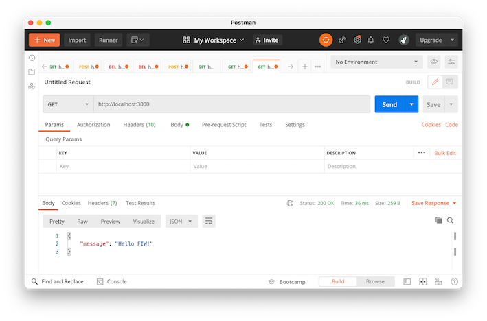
Wann immer wir jetzt jedoch etwas an der Implementierung ändern, müssten wir im Terminal zunächst den Webserver mit
stoppen, um ihn dann wieder mit node server.js zu starten. Um das zu umgehen, gibt es für node nun die Option --watch (siehe hier). Wenn wir unser Projekt also mit
starten, dann compiliert es stets automatisch neu sobald wir etwas am Code ändern.
Routen¶
Hier nur zum Verständnis. Angenommen, wir ändern bspw. in der server.js die Zeile 8 zu
, dann würden alle Routen, die wir in routes.js definieren, unter localhost:3000/api verfügbar sein. Wenn wir dann also z.B. in der routes.js die Zeile 5 zu
ändern, dann ist der GET-Endpunkt localhost:3000/api/fiw.
dotenv und cors¶
Wir installieren zwei weitere Pakete: dotenv und cors
Das dotenv-Paket wird verwendet, um Zugangs- und Konfigurationsdaten in eine .env-Datei auszulagern und diese Daten dann mittels process.env in den Quellcode einzubinden. Dies führt zu einer vollständigen Entkopplung von Zugangs- und Konfigurationsdaten vom Code.
In der .env-Datei werden Schlüssel-Werte-Paare abgelegt, z.B.
In einem Skript, in dem nun die in .env hinterlegten Werte verwendet werden sollen, muss dotenv importiert und dafür die config()-Funktion aufgerufen werden:
Auf den Wert kann dann mittels process.env und den Schlüssel zugegriffen werden:
Beachten Sie, dass die Schlüssel-Werte-Paare nicht zwingend in einer .env-Datei definiert werden müssen. Es können z.B. auch die Umgebungsvariablen verwendet werden, die Sie z.B. in Ihrer .zshrc, .bashrc, .profile usw. definiert haben.
Warning
Beachten Sie außerdem, .env unbedingt in die .gitignore hinzuzufügen! Sie wollen (und sollen!) diese Informationen keinesfalls in ein Remote-Repository laden!
Das cors-Paket ermöglicht cross origin resouce sharing (CORS). CORS ermöglicht, die same origin policy (SOP) zu umgehen. Die SOP ist ein Sciherheitsmechanismus, der dafür sorgt, dass potenziell schädliche Webseiten und Skripte isoliert werden. Nach der SOP darf kein Skript aus einer Webseite einer bestimmten Herkunft (origin) auf eine Webseite anderer Herkunft zugreifen. Das heißt, es soll nicht möglich sein, dass ein fremdes Skript eine Webmailerseite oder ein Intranet, in das ein Nutzerin eingelogged ist, ausliest. Gegenseitige Datenzugriffe soll nur durch Webseiten und Skripte gleicher Herkunft möglich sein. Zur Unterscheidung der Herkunft wird das Protokoll, der Host und der Port miteinander verglichen. Z.B. Vergleich mit http://www.example.de/index.html:
| URI | Herkunft | Begründung |
|---|---|---|
https://www.example.de/index.html |
unterschiedlich | unterschiedliches Protokoll |
http://www.example.de/index.html:3000 |
unterschiedlich | unterschiedlicher Port |
http://webmail.example.de/index.html |
unterschiedlich | unterschiedlicher Host |
http://www.example.de/seite1.html |
gleich | gleiches Protokoll, Host und Port |
CORS ermöglicht den Zugriff von verschiedenen Herkünften, wenn diese explizit als Ausnahmen der SOP definiert werden. Dies ist über den Header von HTTP-Anfragen möglich. Nähere Einzelheiten dazu z.B. hier.
Um das cors-Paket zu verwenden, wird es (nach der Installation mit npm i cors) in das Hauptskript (meistens server.js) eingebunden:
und wird dann als Middleware zwischen alle Routen-Aufrufe erstellt:
Der Zugriff könnte auch eingeschränkt werden. Wenn z.B. nur bei allen /api-Routen *cross-origin resource sharing*möglich sein soll, kann wie folgt definiert werden:
Nach der Installation von dotenv und cors sollte unsere server.js wie folgt aussehen:
Postman¶
Gegenwärtig enthält unsere routes.js genau einen Endpunkt für eine GET-Anfrage:
Das werden wir gleich ändern und es werden andere Anfragemethoden verwendet, z.B. POST, PUT und DELETE. Wenn wir eine URL in einen Browser eingeben, wird stets ein GET auf die angegebene Resource ausgeführt. Das heißt, mit dem Browser können wir nur GET-Anfragen testen:
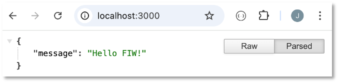
Um auch andere Anfragemethoden zu testen, benötigen wir ein Programm, das auch andere Anfragemethoden verarbeiten kann. Es gibt viele solche Programme, z.B. SoapUI, RapidAPI, Insomnia usw. Wir verwenden hier Postman:
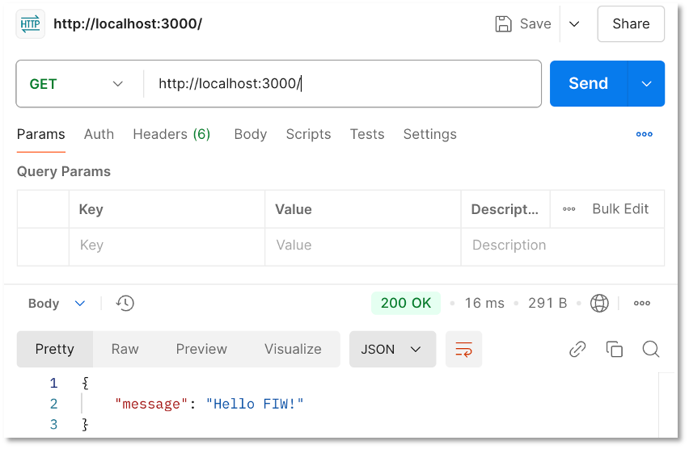
Wir werden gleich die Anwendung von Postman für die verschiedenen Anfragemethoden sehen.
PostgreSQL¶
PostgreSQL können Sie sich selbst lokal installieren oder Sie nutzen den PostgreSQL-Server auf ocean.f4.htw-berlin.de. Das folgende Beispiel zeigt die Verwendung des Servers ocean.f4.htw-berlin.de.
Jetzt erstellen wir die Datenbank und binden sie an.
-
ocean.f4.htw-berlin.deaufrufen, als Name der Datenbankmemberseingeben und auf diePostgreSQL-Karte klicken
-
Modul
pginstallieren (siehe hier) sowie.envunddb.jsim Projektordnerbackenderstellen: -
Wir erstellen uns ein Extra-Skript, um die die Datenbank mit Einträgen per Skript zu befüllen: Dazu erstellen wir eine Datei
initdb.js, in der für die Datenbank eine Tabellememberserstellt und diese mit Einträgen befüllt wird. Da es recht aufwendig ist, sehr viele Einträge in die Datenbank mit dempg-Modul zu schreiben, installieren wir noch ein zusätzliches Paketpg-format, mit dessen Hilfe es möglich ist, die vielen Werte als ein verschachteltes Array anzugeben. Informationen zupg-formatfinden Sie hier.Das Skript enthält zwei Anfragen an die Datenbank. Zunächst wird die Tabelle
membersgelöscht, falls sie existiert und dann erstellt. Das Ausführen dieser Anfrage erfolgt in Zeile16. Danach werden in einer zweiten Anfrage 50 Einträge in diese Tabelle eingefügt. Die Anfrage wird in Zeile75mithilfe despg-format-Paketes formatiert (format()-Methode). Dadurch ist in dem Anfragestring der Platzhalter%Lmöglich, in den dann das verschachtelte Arrayvalueseingesetzt werden kann. Dadurch wird das Einfügen vieler Datensätze erleichtert.Das Skript
initdb.jswird in derserver.jsverwendet. Unter der Route/initwird es ausgeführt und alle Datensätze in die Datenbank eingetragen.Wenn wir nun
http://localhost:3000/initaufrufen, wird die Datenbank automatisch befüllt.
CRUD-Funktionen¶
Nun fügen wir in die routes.js die einzelnen Routen ein, um die CRUD-Funktionen zu implementieren. Wir beginnen mit dem Erzeugen eines neuen Datensatzes:
C - create¶
Wir implementieren den Endpunkt POST localhost:3000/members. Es wird also die HTTP-POST-Anfragemethoden verwendet.
Erläuterungen:
- Aufruf der
POST-Anfragemethode mittelsrouter.post(). Der erste Parameter der Funktion ist die Route/members. Der zweite Parameter ist eine Callback-Funktion. -
Die Parameter dieser Callback-Funktion sind ein
Request- und einResponse-Objekt. Wir haben sie hier mitrequndresbenannt. Siehe dazu auch Request und Response. -
Das
Request-Objekt besitzt Eigenschaften für die Parameter, den Body, HTTP-Header, Cookies usw. Wir greifen mithilfe vonreq.bodyauf den Body desRequest-Objektes zu. In diesem Body schicken wir den neuen Datensatz mit, der in die Datenbank eingefügt werden soll. - Die Daten aus dem Body werden ausgelesen und entsprechend in den Variablen
firstname,lastnameundemailgespeichert. - Die SQL-Anfrage
queryistINSERT INTO ...Darin gibt die Parameter$1, $2, $3 - Die Ausführung der
queryerfolgt mittelsclient.query(). Dieser Funktion werden 2 Parameter übergeben: diequeryund ein Array mit den Werten, die in die Parameter (in der Reihenfolge) eingesetzt werden. -
Die Ausführung der
queryin der Datenbank gibt einresultzurück. Beim Einfügen mithilfe vonINSERT INTO ...Dabei handelt es sich um ein Objekt, das verschiedene Eigenschaften enthält, z.B. (gekürzt):Es beinhaltet z.B. die betroffenen Tabellenzeilen (Result { command: 'INSERT', rowCount: 1, oid: 0, rows: [ { id: 51, firstname: 'Maria', lastname: 'Musterfrau', email: 'maria@musterfrau.fr' } ], fields: [ Field { name: 'id', tableID: 16392, columnID: 1, dataTypeID: 23, dataTypeSize: 4, dataTypeModifier: -1, format: 'text' },rowCount: 1undrows: [...]), wobeirowsein Array aller Datensätze enthält, die hinzugefügt wurden. - Den ersten (einzigen) Eintrag des Arraysresult.rowsgeben wir mithilfe vonres.send(result.rows[0])alsResponsezurück. - Sollte bei der Anfrage an die Datenbank ein Fehler auftreten, wird dieser mittelscatch(err)aufgefanden und das Fehler-Objekt auf die Konsole ausgegeben.
Mithilfe von Postman können wir die Funktionalität des POST /members-Endpunktes ausprobieren. Dazu wählen wir den korrekten Endpunkt http://localhost:3000/members und die Anfragemethode POST.
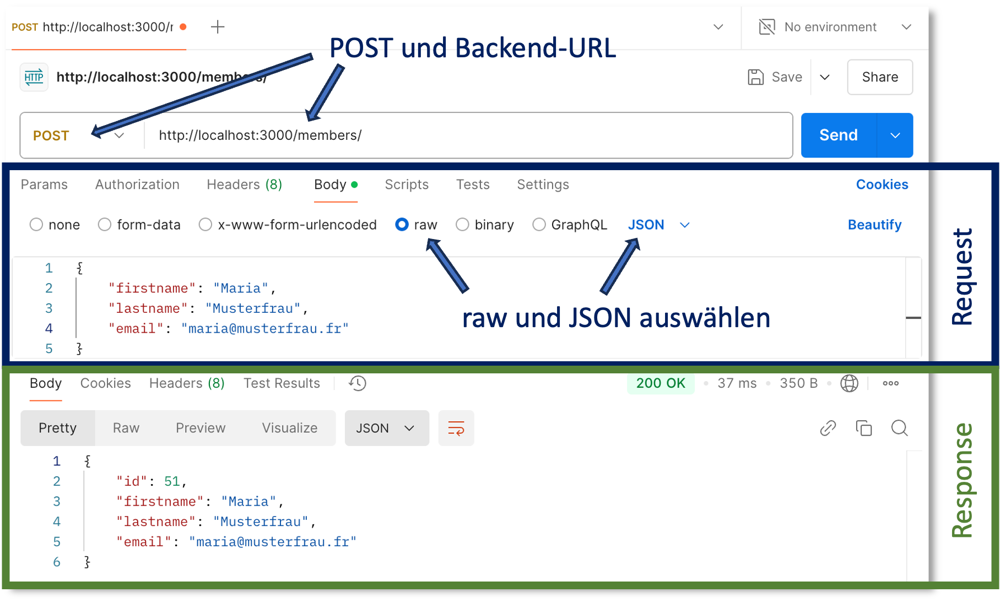
Außerdem fügen wir in den Body des Request-Objektes das einzufügende Objekt im JSON-Format, z.B.:
Beachten Sie, dass Sie im Request-Teil, dort wo Sie auch im Body das obige JSON einfügen, den Radiobutton raw auswählen und als Format JSON. Mit dem Send-Button schicken Sie die Anfrage ab und im Response-teil erscheint der eingefügte Datensatz. Diesem wurde durch die Datenbank eine id hinzugefügt:
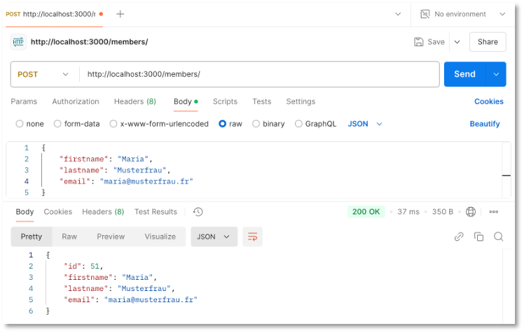
Das generelle Prinzip der parametrisierten SQL-Anfragen wird für POST /members deutlich. Wir definieren uns eine parametrisierte SQL-Anfrage mit den Parametern $1, $2, $3:
In die Parameter $1, $2 und $3 werden dann die entsprechenden Werte eingetragen:
Wichtig ist, dass die Werte als Array übergeben werden. Der Funktion client.query() wird also die parametrisierte Anfrage übergeben und als zweiter Parameter folgt das Array mit den Werten (in korrekter Reihenfolge), die in die Parameter eingesetzt werden.
Wir haben nun den ersten Endpunkt unserer REST-API implementiert. Weiter geht es mit dem Lesen eines oder mehrerer Datensätze.
R - read all¶
Das Auslesen aller Datensätze aus der Datenbank erfolgt über den Endpunkt GET / members. In der routes.js implementieren wir dazu folgende Funktion:
Es wird also die get()-Funktion von Express gewählt. Die Anfrage an die Datenbank ist dieses Mal parameterlos ein einfaches SELECT * FROM members. Als Resultat der Anfrage enthält rows alle Datenbankeinträge. Diese werden als Response zurückgesendet.
In Postman wählen wir GET und geben http:localhost:3000/members ein. Der Body des Request-Objektes bleibt bei GET leer.
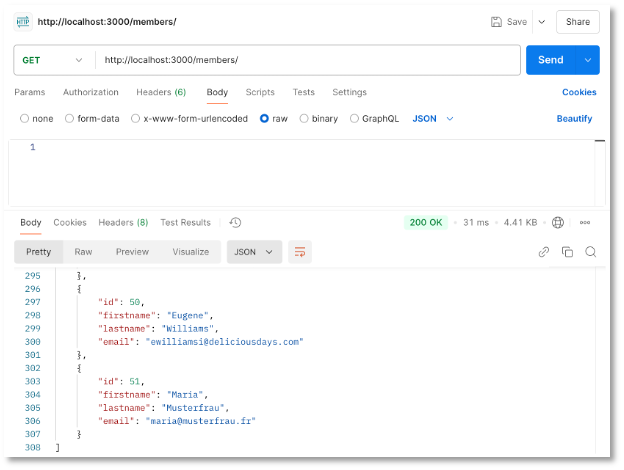
R - read one¶
Durch das Einfügen der Datensätze in die Datenbank erhalten diese vom Datenbankmanagementsystem eine eindeutige id. Wir erstellen uns einen Endpunkt, der uns für eine gegebene id den entsprechenden Datensatz zurückgibt:
Erläuterungen:
- Die
idwird mittels/members/:idals Parameter an die Route anghängt. - Dieses Parameter kann mittels
req.params.idaus demRequest-Objekt ausgelesen werden. - Die Anfrage
queryist erneut parametrisiert$1. bei Aufruf vonclient.query()wird als erster Parameter diese parametrisiertequeryund als zweiter Parameter ein Array übergeben, welches den Wert füridenthält. -
Das
result-Objekt, das dieclient.query()-Funktion zurückgibt, enthält nun entweder den Datensatz mit der gesuchtenid:Result { command: 'SELECT', rowCount: 1, oid: null, rows: [ { id: 51, firstname: 'Maria', lastname: 'Musterfrau', email: 'maria@musterfrau.fr' } ],oder, falls die
idnicht existiert, ein leeresrows-Array: -
Für diese Fallunterscheidung fragen wir den Wert von
rowCountimresults-Objekt ab. Ist dieser Wert1senden wir mittelsres.send(result.rows[0]);den Datensatz. ist der Wert0senden wir ein Objekt mit einermessage.
In Postman sehen diese beiden Fälle so aus:
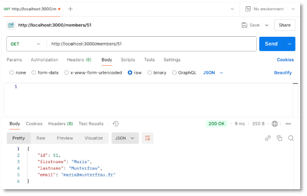
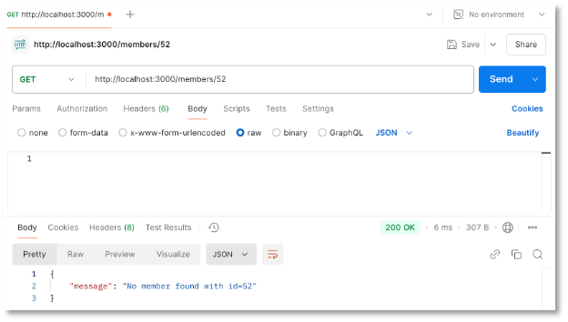
U - update¶
Das Ändern eines bereits existierenden Datensatzes ist der komplizierteste Fall. Wir verwenden die PUT-Anfragemethode. Anstelle von PUT kann auch PATCH verwendet werden. Zur Unterscheidung zwischen PUT und PATCH siehe z.B. hier oder hier.
Erläuterungen:
- Das
Updateist eine Kombination ausRead (one)undCreate. Soll ein existierender Datensatz geändert werden, benötigen wir dieiddieses Datensatzes als Parameter sowie die zu ändernden Daten im Body desRequest-Objektes. - Zunächst prüfen wir mithilfe von
SELECT * ... WHERE id=$1, ob es in der Datenbank einen Datensatz mit der entsprechendenidgibt. Dieidwird als Parameter ausgelesen (req.params.id) und als Parameterwert derqueryübergeben. - Das
resultderclient.query()-Funktion enthält entweder den Datensatz mit deridoder es enthält keinen Datensatz (falls dieidnicht existiert). -
Falls die
idnicht in der Datenbank existiert, wird der HTTP-Statuscode404sowie ein Objekt mit einererror-Nachricht alsResponsegesendet: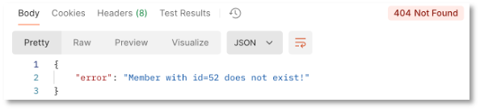
-
Falls der Datensatz existiert, werden die Einträge aus der Datenbank gespeichert (in
member). Sodann wird derbodydesRequest-Objektes ausgelesen. Die Variablenfirstname,lastnameundemailenthalten nun entweder die Werte aus demRequest-Body(geänderte Werte) oder ausmember(alte Werte). Das bedeutet, dass das imbodygesendete Objekt kein vollständigesMember-Objekt sein muss (es genügtfirstnameund/oderlastnameund/oderemail). -
Mit einer
UPDATE ...-Anfrage wird der Datensatz in der Datenbank geändert. Alsupdateresultwird der gänderte Datensatz alsResponsegesendet.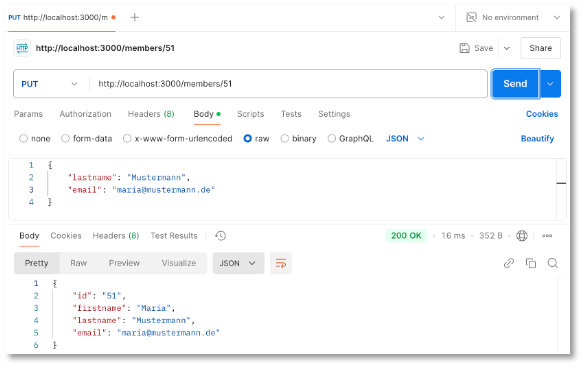
D - delete¶
Zuletzt erzeugen wir noch einen Endpunkt, mit dem das Löschen eines Datensatzes möglich wird. Dazu verwenden wir die Anfragemethode DELETE. Die Route ist mit einer id parametrisiert. Über diese id wird der Datensatz gelöscht, falls die id in der Datenbank existiert:
Zurückgesendet wird in beiden Fällen ein Objekt mit einer message-Eigenschaft. Für den Fall, dass die id nicht in der Datenbank existiert, wird außerdem der HTTP-Statuscode 404 gesendet:
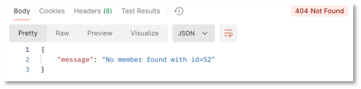
Wurde der entsprechende Eintrag gelöscht, erscheint:
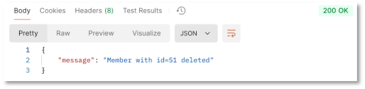
Hier nochmal die vollständige routes.js:
routes.js
Success
Wir haben nun auch ein Backend, das auf die PostgreSQL zugreift, die Sie auch in der Datenbankvorlesung verwenden. Sie benötigen also keine eigene Installation der PostgreSQL. Die Befüllung der Datenbank erfolgt per Skript. Wir haben eine erste eigene REST-API implementiert.